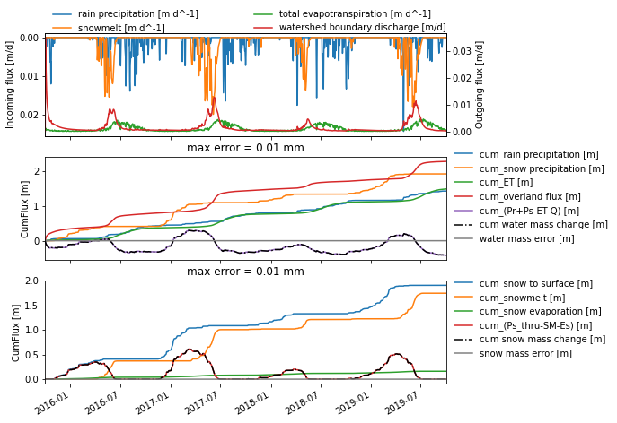
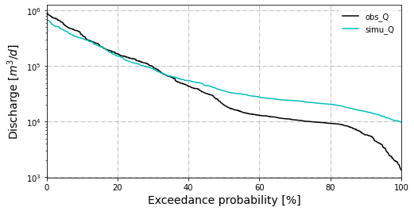

Model evaluation#
This example shows how to load model and observation data and evalute model performance.
# skip this if package has already been installed
!pip install modvis
from modvis import ATSutils
from modvis import utils
from modvis import general_plots as gp
import matplotlib.pyplot as plt
model_dir = "../data/coalcreek"
Download the sample data when running on Google Colab
# import os
# if not os.path.exists(model_dir):
# !git clone https://github.com/pinshuai/modvis.git
# %cd ./modvis/examples/notebooks
Load model data#
This will load the water_balance-daily.dat file generated from ATS model. The data file includes watershed variables including outlet discharge, ET, and etc.
simu_df = ATSutils.load_waterBalance(model_dir, WB_filename="water_balance-daily.dat",
plot = True)

Load observation data#
obs_df = utils.load_nwis(sites= "09111250", start = '2014-10-01')
obs_df.plot()
<AxesSubplot:>
Streamflow comparison#
Compare simulated streamflow with observed USGS streamflow.
fig,ax = plt.subplots(1,1, figsize=(8,4))
simu_df['watershed boundary discharge [m^3/d]'].plot(color = 'c',ax=ax, label= "simu_Q")
obs_df['Discharge [m^3/d]'].plot(color = 'k', ax=ax, label = "obs_Q")
ax.set_ylabel("Discharge [m^3/d]")
ax.legend()
<matplotlib.legend.Legend at 0x7fd7c97556f0>
FDC comparison#
Compare the simulated vs. observed flow duration curve.
fig, ax = gp.plot_FDC(dfs=[obs_df['Discharge [m^3/d]'], simu_df['watershed boundary discharge [m^3/d]']],
labels=['obs_Q','simu_Q'],
colors=['k', 'c'],
start_date="2016-10-01"
)

One-to-one plot#
One to one scatter plot with metrics.
gp.one2one_plot(obs_df['Discharge [m^3/d]'], simu_df['watershed boundary discharge [m^3/d]'],
metrics=['R^2', 'NSE', 'mKGE'],
# metrics='all',
show_density=False,
start_date="2016-10-01"
)
{'R^2': 0.8721059035985849,
'NSE': 0.8386136492066862,
'mKGE': 0.7947371500678737}